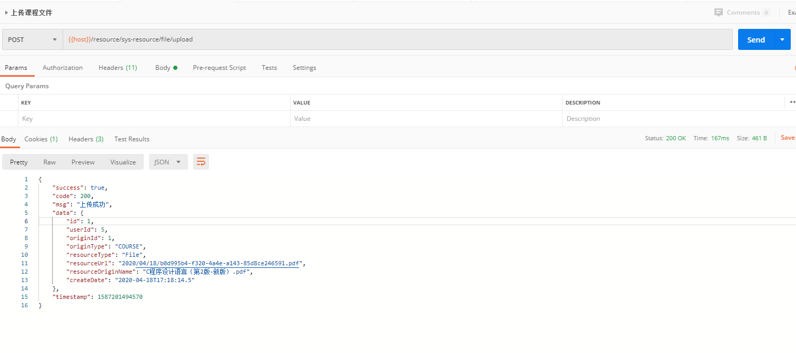
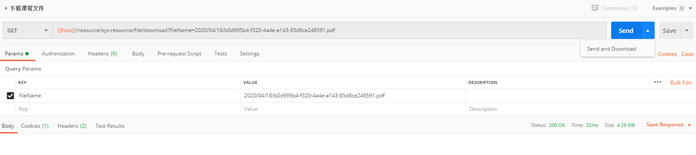

在 Spring Boot 项目，往往有处理文件上传/下载功能的需要，比如图片的上传，附件的上传下载等功能需求。在某次实践过程中，打算将本次的文件上传下载留作记录，故整理本文以备后面项目参考。
环境准备
本次实践中，为了保存文件的原始文件名记录，同时为了防止文件夹中出现多个同名文件，所以需要一个表来存放原文件名和自定义文件名的关系。
创建资源表
创建 sys_resource 表来映射文件名和自定义文件名的关联关系，同时记录创建者的信息及创建时间，sql 如下：
1
2
3
4
5
6
7
8
9
10
11
12
| DROP TABLE IF EXISTS `sys_resource`;
CREATE TABLE `sys_resource` (
`id` bigint(20) UNSIGNED NOT NULL AUTO_INCREMENT COMMENT '主键',
`user_id` bigint(20) NOT NULL COMMENT '用户 id',
`origin_id` bigint(20) UNSIGNED NOT NULL COMMENT '源id',
`origin_type` varchar(50) CHARACTER SET utf8mb4 COLLATE utf8mb4_general_ci NOT NULL COMMENT '源类型(课程/问题/评论)',
`resource_type` varchar(50) CHARACTER SET utf8mb4 COLLATE utf8mb4_general_ci NOT NULL COMMENT '资源类型(文件/图片/视频)',
`resource_old_name` varchar(255) CHARACTER SET utf8mb4 COLLATE utf8mb4_general_ci NOT NULL COMMENT '资源原始文件名',
`resource_new_name` varchar(255) CHARACTER SET utf8mb4 COLLATE utf8mb4_general_ci NOT NULL COMMENT '资源系统生成文件名',
`create_date` datetime(0) NOT NULL COMMENT '创建日期',
PRIMARY KEY (`id`) USING BTREE
) ENGINE = InnoDB CHARACTER SET = utf8mb4 COLLATE = utf8mb4_general_ci COMMENT = '资源表' ROW_FORMAT = Dynamic;
|
创建相应的 Java Bean
1
2
3
4
5
6
7
8
9
10
11
12
13
14
15
16
17
18
19
20
21
22
23
24
25
26
27
28
29
30
31
32
33
34
35
36
37
38
39
|
@Data
@EqualsAndHashCode(callSuper = true)
@Accessors(chain = true)
@ApiModel(value="SysResource对象", description="资源表")
public class SysResource extends BaseEntity {
private static final long serialVersionUID = 1L;
@ApiModelProperty(value = "用户id")
private Long userId;
@ApiModelProperty(value = "源id")
private Long originId;
@ApiModelProperty(value = "源类型(课程/问题/评论)")
private String originType;
@ApiModelProperty(value = "资源类型(文件/图片/视频)")
private String resourceType;
@ApiModelProperty(value = "资源系统生成文件名")
private String resourceNewName;
@ApiModelProperty(value = "资源原始文件名")
private String resourceOldName;
@ApiModelProperty(value = "创建日期")
@JSONField(format = "yyyy-MM-dd HH:mm:ss")
private LocalDateTime createDate;
}
|
配置相应的文件存放路径
需要将上传的图片等资源保存到指定的路径下，为此，在 application.yml 配置文件的路径，我本地的路径如下：
1
2
| resources:
basePath: D:/Graduration/resources/
|
接着，在控制器中注入配置的环境变量，以我项目的为示例：
1
2
3
4
5
6
7
8
9
| @RestController
@RequestMapping("/resource/sys-resource")
@Api(value = "/resource/sys-resource", tags = "系统资源")
public class SysResourceController {
@Value("${resources.basePath}")
private String baseDir;
}
|
这里可能需要注意，在使用 @Value 注入属性时，所在的类需要是 Spring 容器中管理的 Bean，所以需要先将类交由 Spring 容器管理，这里通过添加 @RestController 注解实现。@RestController 注解主要是指明该类是一个控制器类，负责接收请求，同时 Rest 表示该接口的所有请求返回的数据都将直接返回给前端，而不再是跳转的页面。
至此，相关的环境已经准备完毕。
文件上传
1
2
3
4
5
6
7
8
9
10
11
12
13
14
15
16
17
18
19
20
21
22
23
24
25
26
27
28
29
30
31
32
33
34
35
36
37
38
39
40
41
42
43
44
45
46
47
48
49
50
51
52
53
54
55
56
57
58
59
60
61
62
63
64
65
66
| @RestController
@RequestMapping("/resource/sys-resource")
@Api(value = "/resource/sys-resource", tags = "系统资源")
public class SysResourceController {
@Value("${resources.basePath}")
private String baseDir;
@PostMapping("/file/upload")
@RequiresRoles("teacher")
@ApiOperation(value = "上传课程文件", notes = "文件", response = ResponseEntity.class)
public ResponseEntity uploadFile(MultipartFile file, Long originId, Integer originType) throws BaseException {
if (originId == null) throw new BaseException(ResponseEntity.ResponseCode.ERROR.getCode(), "资源id不能为空");
if (originType == null) throw new BaseException(ResponseEntity.ResponseCode.ERROR.getCode(), "资源类型不能为空");
SysResource sysResource = new SysResource();
sysResource.setUserId(((SysUser) SecurityUtils.getSubject().getPrincipal()).getId());
sysResource.setOriginId(originId);
sysResource.setOriginType(EnumUtil.obj2Enum(SysResourceEnum.OriginType.class, "getCode", originType).toString());
sysResource.setResourceType(SysResourceEnum.ResourceType.File.toString());
sysResource.setResourceOldName(file.getOriginalFilename());
sysResource.setResourceNewName(saveFile(filePath, file));
sysResource.setCreateDate(LocalDateTime.now());
if (sysResourceService.save(sysResource)) return ResponseUtil.success(sysResource, "上传成功");
return ResponseUtil.error("上传失败");
}
private String saveFile(String baseFolder, MultipartFile file) throws BaseException {
try {
String format = sdf.format(new Date());
String realPath = StringUtils.join(baseFolder, format);
File folder = new File(realPath);
if (!folder.exists()) {
folder.mkdirs();
}
String oldName = file.getOriginalFilename();
String newName = UUID.randomUUID().toString() + "." + StringUtils.substringAfterLast(oldName, ".");
file.transferTo(new File(folder, newName));
return StringUtils.join(format, "/", newName);
} catch (Exception e) {
throw new BaseException(ResponseEntity.ResponseCode.ERROR.getCode(), e);
}
}
}
|
代码中的注释其实已经讲得比较清楚了。
文件下载
1
2
3
4
5
6
7
8
9
10
11
12
13
14
15
16
17
18
19
20
21
22
23
24
25
26
27
28
29
30
31
32
33
34
35
| @RestController
@RequestMapping("/resource/sys-resource")
@Api(value = "/resource/sys-resource", tags = "系统资源")
public class SysResourceController {
@Value("${resources.basePath}")
private String baseDir;
@GetMapping("/file/download")
@ApiOperation(value = "下载文件", notes = "文件", httpMethod = "GET")
public void exportUserInfo(String fileName, HttpServletResponse response) throws BaseException {
String realPath = StringUtils.join(baseDir, fileName);
File file = new File(realPath);
if (!file.exists() || !file.isFile()) {
throw new BaseException(ResponseEntity.ResponseCode.ERROR.getCode(), "文件不存在");
}
try (InputStream inputStream = new FileInputStream(file);
BufferedInputStream bis = new BufferedInputStream(inputStream)) {
byte[] buffer = new byte[1024];
int i = bis.read(buffer);
OutputStream outputStream = response.getOutputStream();
while (i != -1) {
outputStream.write(buffer, 0, i);
i = bis.read(buffer);
}
} catch (Exception e) {
throw new BaseException(ResponseEntity.ResponseCode.ERROR.getCode(), e);
}
}
}
|
测试
这里使用 Postman 对接口进行测试。首先，测试文件上传功能：

接着，测试文件下载功能：

这里需要注意的是：发送请求的按钮需要选择 Send and Download 按钮才能下载成功。